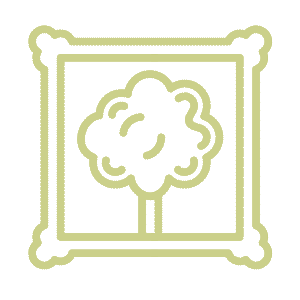
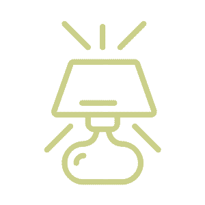
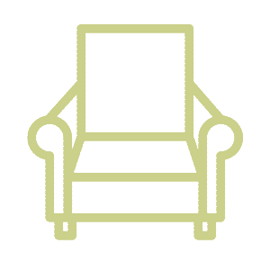

×

Artwork
Consider neutral and/or cooler tones in art to soothe the mind. Nature-based artwork and decor make a space restful and restorative. Avoid pieces that might be confusing, chaotic, or complex to the beholder, as they may impose stress.
×

Lighting
Avoid overhead fluorescent lighting in favor of floor and table lamps with soft light - to promote comfort. Some lightbulbs simulate natural light, which may boost the positive ambiance of a space.
×

Seating
Furniture should be oriented so that it does not block any object, or enclose part of a room. An open layout boosts productivity and positive energy flow. Seating should be supportive and comfortable rather than rigid, regardless of aesthetic.